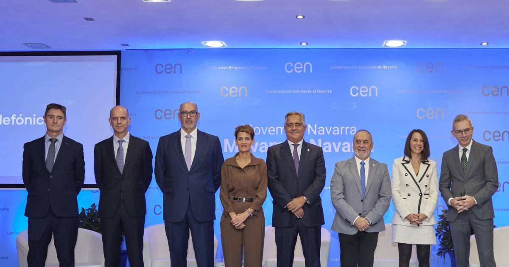

La tecnología 5G llega a Navarra a través de las empresas  El presidente de Telefónica España, Emilio Gayo, ha señalado que la tecnología 5G "ya ha venido en 2022 y 2023 gracias a los últimos acontecimientos de las tecnologías y a la disponibilidad de las frecuencias por parte del Estado a los operadores". Ha destacado que no se trata de una "tecnología cualquiera, ya que esta va a comenzar en las empresas y en las industrias, a diferencia de la celular que empezó en el sector residencial". De esta forma, ha insistido en que la tecnología 5G ofrece un "gran potencial para cambiar el sector industrial". Telefónica "está comprometida con la conectividad, centrada en el 5G, para que la utilicen las empresas, por ejemplo como ha ocurrido con Viscofan, que ha logrado desarrollar una fábrica inteligente en Cáseda". Gayo ha participado en la jornada Navarra en digital, industria 4.0 y 5G, transformando el tejido empresarial de la Comunidad Foral, organizada por #TelefónicaEnDigital, en colaboración con la CEN. La sede de la Confederación Empresarial, en Pamplona, ha acogido este evento en el que ha participado la presidenta del Gobierno de Navarra en su apertura, María Chivite. Los cuatro factores Emilio Gayo ha manifestado la importancia de "afrontar una digitalización sostenible e inclusiva con el objetivo de generar nuevas posibilidades de mejora para las empresas y la sociedad". Ha citado cuatro factores que propician "el cambio y la evolución: las personas, las infraestructuras, las tecnologías, y la ciberseguridad". Ha recalcado que las infraestructuras se convierten en la base de esa transformación. "En Navarra disponemos de una buena conectividad, alcanzamos el 80% con la cobertura fibra, o las tecnologías celulares, con el 98% de cobertura de 4G, y ahora el 5G". Otro elemento clave son las diferentes tecnologías, y las empresas deben "entender su problema para qué tecnología escoger". De esta forma, "la conjunción de tecnologías genera el cambio y se avanza". El tercer aspecto consiste en la ciberseguridad. "Telefónica España se presenta como la infraestructura del país que más ataques recibe, más de 500 millones de acciones de riesgo al año directamente a la compañía o a través de nosotros para clientes". Pero ha subrayado que gracias al trabajo de los profesionales el año pasado "solo uno fue crítico". Por último ha remarcado el papel de las personas en este proceso con su talento digital. Ha defendido la necesidad de incorporar a alumnos y alumnas en disciplinas académicas de ciencia, tecnología, ingeniería y matemáticas, las conocidas STEM por el acrónimo en inglés, y crear las condiciones para ello. Además, se ha referido a los trabajadores y trabajadoras en activo, a quienes hay que reciclar para no perder el tren de la digitalización por medio de la formación. "El talento transformado enriquece. Telefónica ha implicado a más de 20.000 empleados en los últimos dos años", ha reiterado. Por último también se ha referido a la ciudadanía en general. "Debemos trabajar para que la conectividad llegue a todos y fomentar así la inclusión social", ha repetido. Por último ha insistido en que "la tecnología es un reto, una oportunidad y una responsabilidad de todos". La Estrategia Digital 2030 Durante la apertura de la jornada, María Chivite ha afirmado que las administraciones públicas deben "protagonizar y marcar el camino de la transformación" digital y ser "palanca de cambio, con un entorno favorable y adecuado para favorecer la digitalización de la ciudadanía y empresas". Chivite ha destacado que Navarra, empresas y ciudadanía deben "aspirar a entender el cambio y a protagonizar la transformación". Ha recordado que la Comunidad Foral cuenta con la Estrategia Digital Navarra 2030, cuyo objetivo es "avanzar en la transformación de Navarra en un territorio inteligente, líder en tecnologías clave para dar respuesta a los retos de un mundo globalizado y digital". "Aquí la Administración debe ser ejemplo: una sociedad, por muy digital que sea, también necesita infraestructuras, y hemos conseguido que internet de alta velocidad llegue al 98,5% de la población navarra", ha subrayado, si bien ha añadido que no se olvida de "los 15.000 navarros que están en zona de sombra". Ese 1,5% "debe seguir siendo uno de nuestros objetivos prioritarios", ha remarcado. Los datos Chivite también ha subrayado que "la digitalización debe ser un medio para la mejor toma de decisiones" y que "los datos son la base para analizar y comprender la realidad". Tras asegurar que "queremos ser una administración anticipada" y que trabaje de forma "predictiva", ha apuntado que para ello se ha puesto en marcha la Oficina del Dato, que promueve "la innovación basada en datos ordenados y procesados mediante herramientas digitales como la Inteligencia Artificial, sin perder de vista su uso ético en consonancia con los valores de sostenibilidad, igualdad, innovación y buen gobierno". Además, ha destacado la importancia de fomentar desde las administraciones la capacitación, es decir, de "acompañar a la ciudadanía en este proceso de transición" y "ofrecer servicios digitales sencillos de usar, fáciles de comprender, y ayudar a las personas que más dificultades tienen para acceder a estos servicios digitales". "Y por otro lado, se debe fomentar la digitalización avanzada. No solo debemos formar personas que usen tecnología, tenemos que ser proactivos en formar a personas que creen la tecnología", ha señalado. Mesa redonda Posteriormente se ha celebrado una mesa redonda con la participación de Juan Cruz Cigudosa, consejero de Universidad, Innovación y Transformación Digital; Manuel Ángel Alonso, director Territorio Norte Telefónica España; Mar González, directora gerente de Tracasa Instrumental; y César Arraiza, director de Estrategia, Organización y Sistemas de Viscofan. Los cuatro han abordado cómo La industria 4.0 y el 5G se convierten en palancas de la transformación y competitividad de la industria navarra. Todos ellos han resumido su intervención con un titular. Cigudosa ha manifestado que "Navarra es digital"; Alonso ha destacado que la "transformación digital no es una opción sino una oportunidad" y que "la clave reside en capacitar a las personas". Arraiza ha dicho que "la digitalización será requisito para captar talento" y González ha insistido en que "la tecnología es importante; pero más, qué hacer con ella". Por su parte, Juan Miguel Sucunza, presidente de la CEN, ha señalado que “se está viviendo una digitalización acelerada en el marco de un cambio de modelo económico y empresarial”. Además, ha remarcado que “la transformación digital va de empresas y de personas”. Ha resaltado la importancia de la creación de “CEN digital, un foro en el que se discute la transformación que se está produciendo en Navarra, España y el mundo”. Y ha resaltado que se está produciendo “un cambio de mentalidad de las empresas".